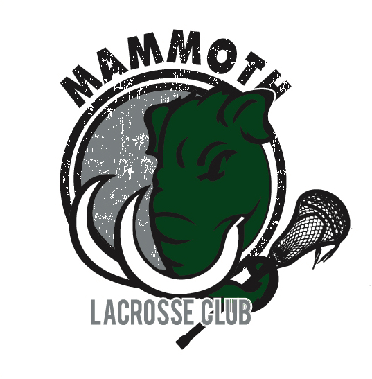

Mission of Mammoth
To provide Elmhurst lacrosse players a positive, encourgaing environment that teaches the technical and team aspects of lacrosse as well as teamwork, character, integrity, and a love of the game.
The Program
Mammoth Lacrosse Club was established in 2016 to provide high level coaching, training, and competition for lacrosse players in the Western Suburbs of Chicago. Mammoth Lacrosse Club is operated and coached by Don Canfield, the Head Boy's Lacrosse Coach at York Community High School. In 2015, Coach Canfield was named Illinois High School Boys Lacrosse Coach of the Year by his coaching peers. Practices and trainings are held in Elmhurst or neighboring communities. Mammoth Lacrosse offers club teams that compete at high level club tournaments in the Chicagoland area. In addition to club teams, Mammoth offers training sessions for players and teams. The mission of Mammoth Lacrosse Club is to provide a local, affordable, competitive, club team that teaches players the fundamentals of developing individual and team lacrosse skills as well as teaching teamwork, character, leadership, and a love of the game!
Donald Canfield - The Coach
Head Coach, York Boys Lacrosse, Elmhurst, IL. Currently in 9th season at York.
York finished in the top 10 in Illinois in the 2016 season.
2015 IHSLA Coach of the Year.
President of Chicago Lacrosse Club, men's club team.
Player and president of Miami University's MCLA club team 2004-2008.
8th year as 7th grade math and social studies teacher in Berkeley, IL.